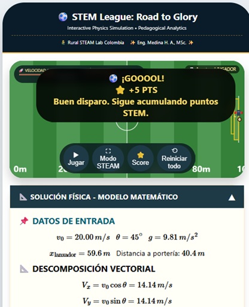

RED 1: Rural STEAM Lab – Simulador Interactivo de Movimiento de Proyectil
Autor: Ing. Henson Alberto Medina Castillo – Rural STEAM Lab
Descripción: Recurso educativo digital interactivo diseñado para fortalecer el aprendizaje del movimiento de proyectil mediante simulación. El estudiante puede modificar variables como la velocidad inicial y el ángulo de lanzamiento para analizar la trayectoria, la altura máxima, el alcance horizontal y el tiempo de vuelo, favoreciendo el aprendizaje por experimentación y la comprensión de la cinemática bidimensional.
Enlace: https://ruralsteamlab.com/simulators/projectile-motion/
Características y posibilidades de uso:
- Simulación interactiva en tiempo real.
- Permite modificar variables del lanzamiento.
- Visualización inmediata de la trayectoria parabólica.
- Favorece el aprendizaje activo y el aprendizaje basado en simulación.
- Compatible con computadores, tabletas y dispositivos móviles.
- Puede utilizarse en clases presenciales, virtuales o híbridas.
- Facilita actividades de indagación, resolución de problemas y experimentación virtual.
Limitaciones:
- Requiere un navegador web moderno.
- Algunas funciones pueden depender de la conexión a Internet.
- No reemplaza las prácticas experimentales de laboratorio; actúa como recurso de apoyo.
